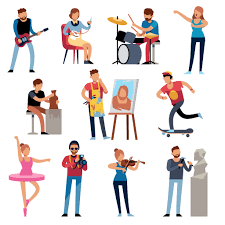

Hobbies

Your hobby should be a completely pleasurable activity that allows you to take your mind off of the demands of your daily life or negative emotions. It’s a healthy and productive distraction from work or personal troubles. While adding an activity to your list of things to do might seem like it could create more stress, I've found that it is actually a great outlet for releasing stress. When you focus on a non-work-related task and you are able to get into the flow of it, all of your stress seems to fade away.